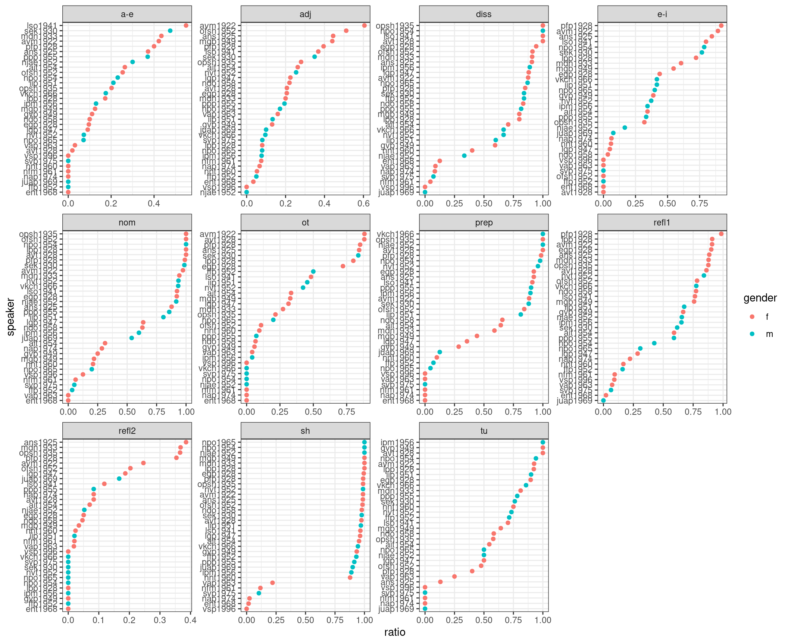
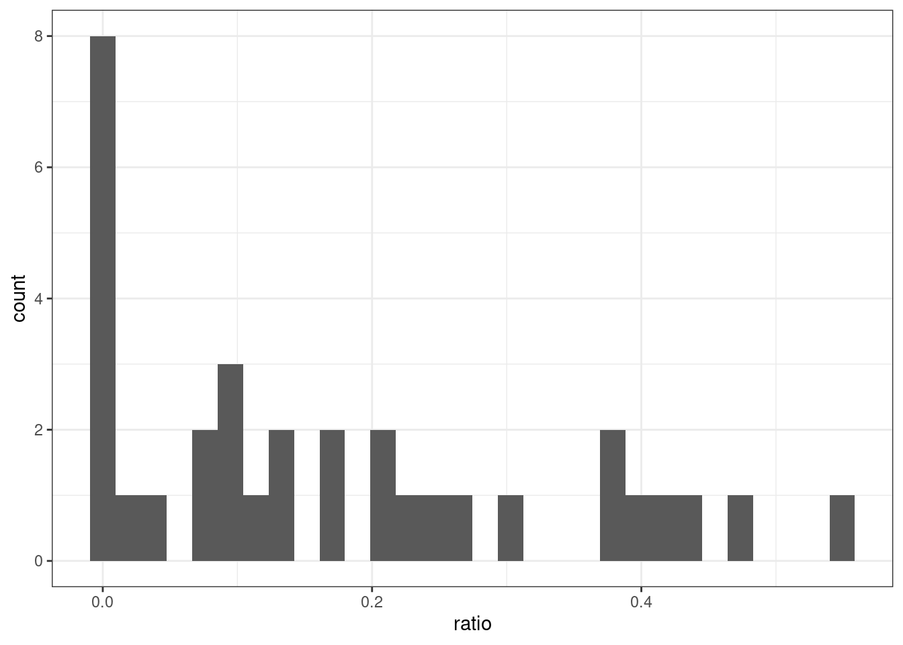
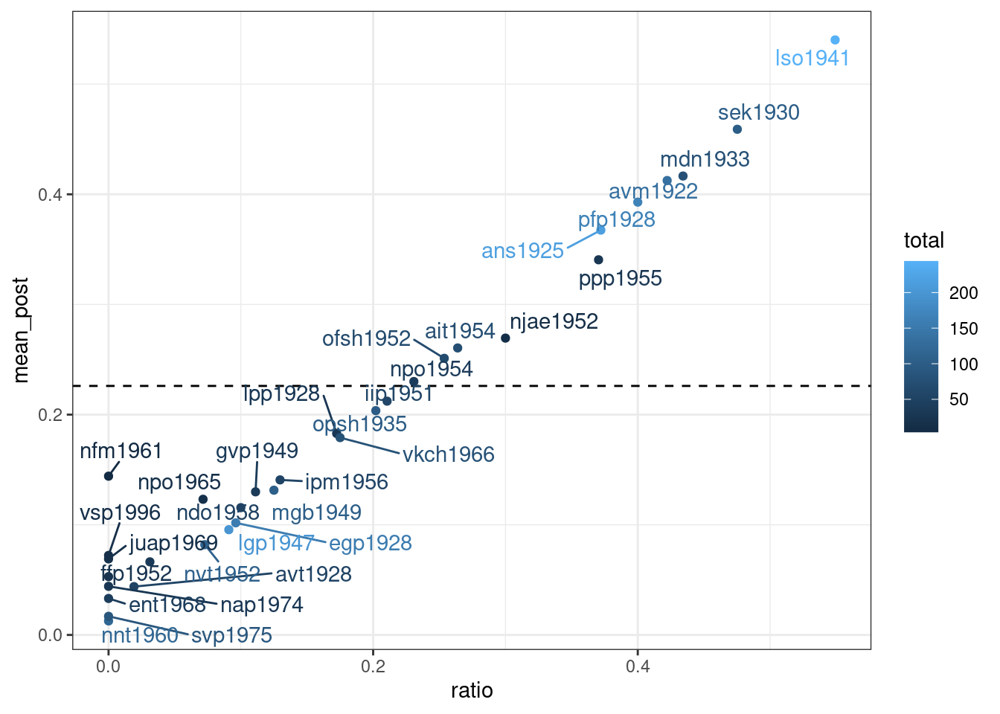
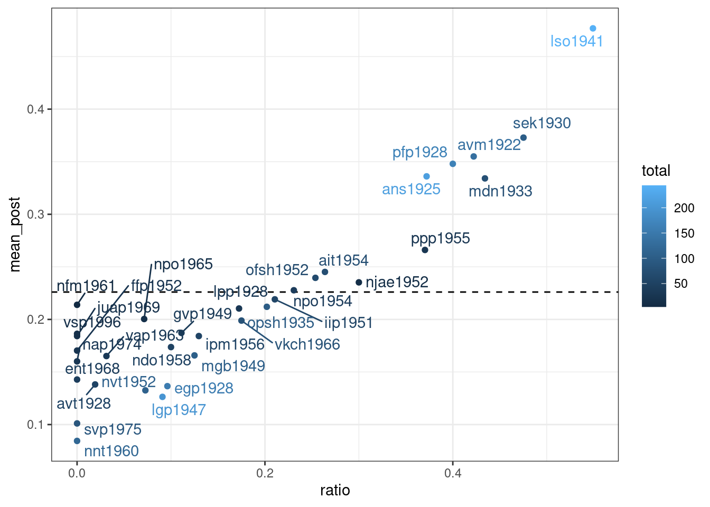
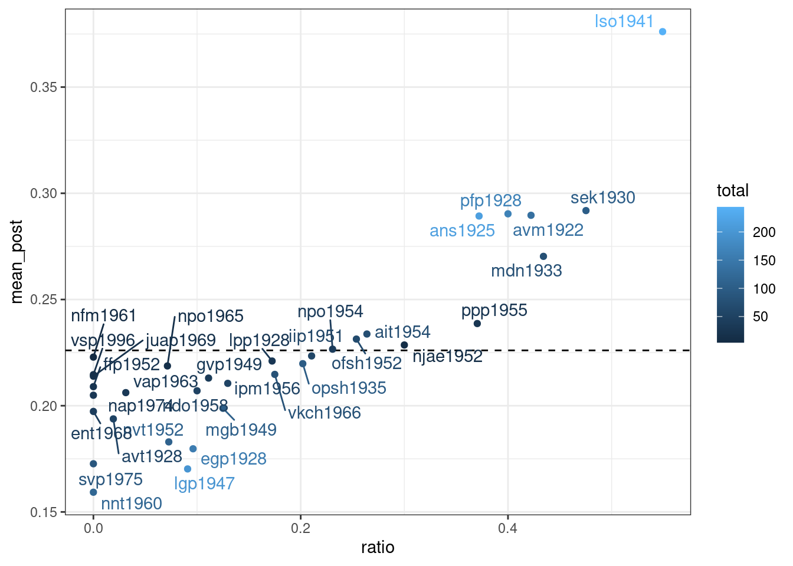
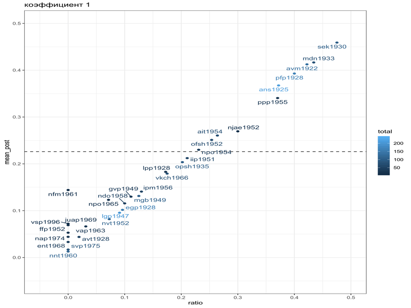
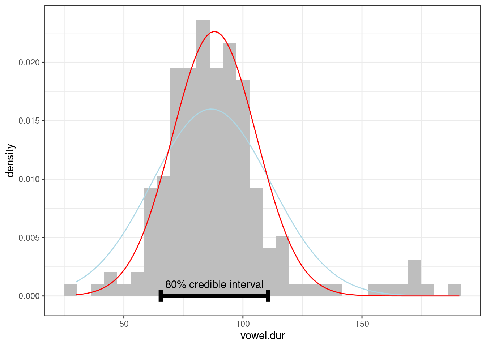

8 Эмпирическая байесовская оценка
library(tidyverse)Метод эмпирической байесовской оценки (Empirical Bayes estimation) — один из байесовских методов, в рамках которого:
- производят оценку априорного распределения вероятностей на основании имеющихся данных
- используют полученное априорное распределение для получение апостериорной оценки для каждого наблюдения
Рассмотрим пример данных из статьи (Daniel et al. 2019), в которой аннализировались интервью с людьми из деревени Михалёвская и исследовался ряд консервативных и инновативных черт в их речи.
mikhalevskaja <- read_csv("https://raw.githubusercontent.com/agricolamz/2022_da4l/master/data/ustya_data.csv")
glimpse(mikhalevskaja)Rows: 359
Columns: 7
$ speaker <chr> "avm1922", "ans1925", "avt1928", "egp1928", "lpp1928", "p…
$ year <dbl> 1922, 1925, 1928, 1928, 1928, 1928, 1930, 1933, 1935, 194…
$ gender <chr> "f", "f", "f", "f", "f", "f", "m", "f", "f", "f", "f", "f…
$ conservative <dbl> 92, 56, 12, 33, 2, 83, 22, 22, 33, 60, 58, 11, 55, 8, 30,…
$ innovative <dbl> 60, 70, 46, 127, 23, 127, 41, 88, 85, 103, 200, 73, 70, 5…
$ total <dbl> 152, 126, 58, 160, 25, 210, 63, 110, 118, 163, 258, 84, 1…
$ feature <chr> "adj", "adj", "adj", "adj", "adj", "adj", "adj", "adj", "…Представим себе, что мы решили задаться целью найти наиболее диалектных носителей:
library(tidytext)
mikhalevskaja %>%
mutate(ratio = conservative/total,
speaker = reorder_within(speaker, ratio, feature)) %>%
ggplot(aes(ratio, speaker, color = gender))+
geom_point()+
facet_wrap(~feature, scales = "free")+
scale_y_reordered()
Не очень легко это анализировать… Давайте выберем один признак – подъем a: консервативными считались формы [ꞌpʲetʲero], а инновативной – реализация [ꞌpʲatʲərə]. Посчитаем долю и отсортируем:
mikhalevskaja %>%
filter(feature == "a-e") %>%
mutate(ratio = conservative/total) %>%
arrange(desc(ratio))В целом, всего в интервью встречается от 4 до 244 контекстов для реализации признака. Хотим ли мы верить, что lpp1928 с 29 наблюдениями диалектнее, чем mgb1949 с 104 наблюдениями, только на основании доли?
mikhalevskaja %>%
filter(feature == "a-e") %>%
mutate(ratio = conservative/total) %>%
ggplot(aes(ratio))+
geom_histogram()
Мы можем провести байесовский апдейт, но для этого нам нужно априорное распределение. Трюк, который предлагает байесовская эмпирическая оценка заключается в том, что априорное распределение можно попробовать получить на основании данных:
mikhalevskaja %>%
filter(feature == "a-e") %>%
mutate(ratio = conservative/total) %>%
filter(ratio != 0, # оказывается fitdist плохо работает, когда много крайних точек
ratio != 1) ->
for_beta_estimation
beta_est <- fitdistrplus::fitdist(for_beta_estimation$ratio, distr = 'beta', method = 'mle')
beta_estFitting of the distribution ' beta ' by maximum likelihood
Parameters:
estimate Std. Error
shape1 1.590621 0.4127354
shape2 5.445977 1.5766951Сделаем байесовский апдейт:
mikhalevskaja %>%
filter(feature == "a-e") %>%
mutate(alpha_prior = beta_est$estimate[1],
beta_prior = beta_est$estimate[2],
alpha_post = conservative+alpha_prior,
beta_post = innovative+beta_prior,
mean_post = alpha_post/(alpha_post+beta_post),
ratio = conservative/total) %>%
ggplot(aes(ratio, mean_post, label = speaker, color = total))+
geom_hline(yintercept = beta_est$estimate[1]/sum(beta_est$estimate), linetype = 2)+
geom_point()+
ggrepel::geom_text_repel()
Как видно, байесовская оценка не сильно отличается от старой оценки средним, однако таким образом мы можем видеть, что после байесовского апдейта наблюдения с маленьким количеством наблюдений льнут к среднему априорного распределения. Мы можем даже умножить параметры нашего априорного распределения на 10, чтобы показать это:
mikhalevskaja %>%
filter(feature == "a-e") %>%
mutate(alpha_prior = beta_est$estimate[1]*10,
beta_prior = beta_est$estimate[2]*10,
alpha_post = conservative+alpha_prior,
beta_post = innovative+beta_prior,
mean_post = alpha_post/(alpha_post+beta_post),
ratio = conservative/total) %>%
ggplot(aes(ratio, mean_post, label = speaker, color = total))+
geom_hline(yintercept = beta_est$estimate[1]/sum(beta_est$estimate), linetype = 2)+
geom_point()+
ggrepel::geom_text_repel()
mikhalevskaja %>%
filter(feature == "a-e") %>%
mutate(alpha_prior = beta_est$estimate[1]*40,
beta_prior = beta_est$estimate[2]*40,
alpha_post = conservative+alpha_prior,
beta_post = innovative+beta_prior,
mean_post = alpha_post/(alpha_post+beta_post),
ratio = conservative/total) %>%
ggplot(aes(ratio, mean_post, label = speaker, color = total))+
geom_hline(yintercept = beta_est$estimate[1]/sum(beta_est$estimate), linetype = 2)+
geom_point()+
ggrepel::geom_text_repel()
Или в формате гифки:

В работе (Coretta 2016) собраны данные
длительности исландских гласных. Используя алгоритм максимального
правдоподобия и идеи эмперической байесовской оценки, найдите априорное
распределение для длительности гласных (переменная
vowel.dur), используя все наблюдения в датасете и моделируя
его нормальным распределением. Дальше проведите байесовский апдейт
длительности гласных носителя tt01 (переменная
speaker) и нарисуйте 80% доверительный интервал
апостериорного распределения.
